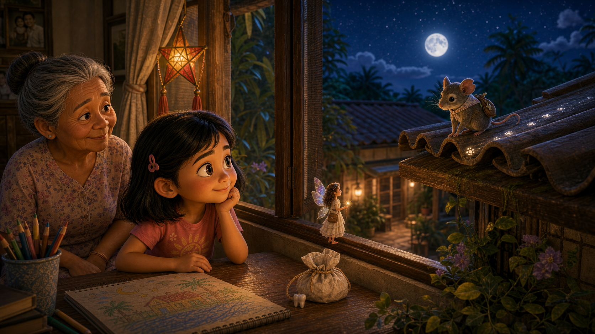
Daga and the One-Year Wish
A Philippines story of a roof mouse, a hidden tooth, and the magic that does not hurry.
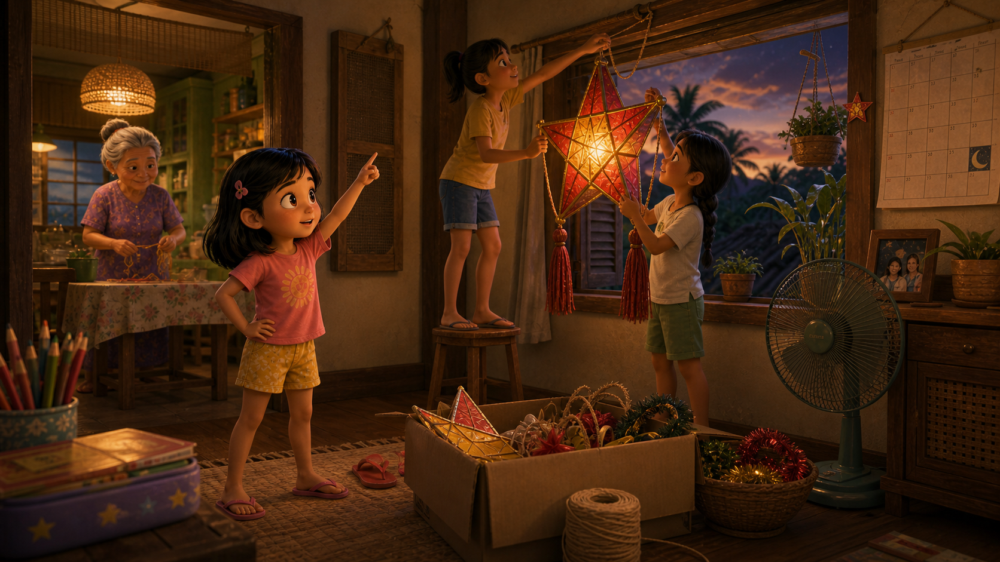
Every December, Lola's house grew strings, stars, and careful knots.
The parol came out of its box.
The cousins came out of everywhere.
Maya's older cousins were tall enough to help near the eave.
Maya was tall enough to point at what they were doing wrong.
This was also important work.
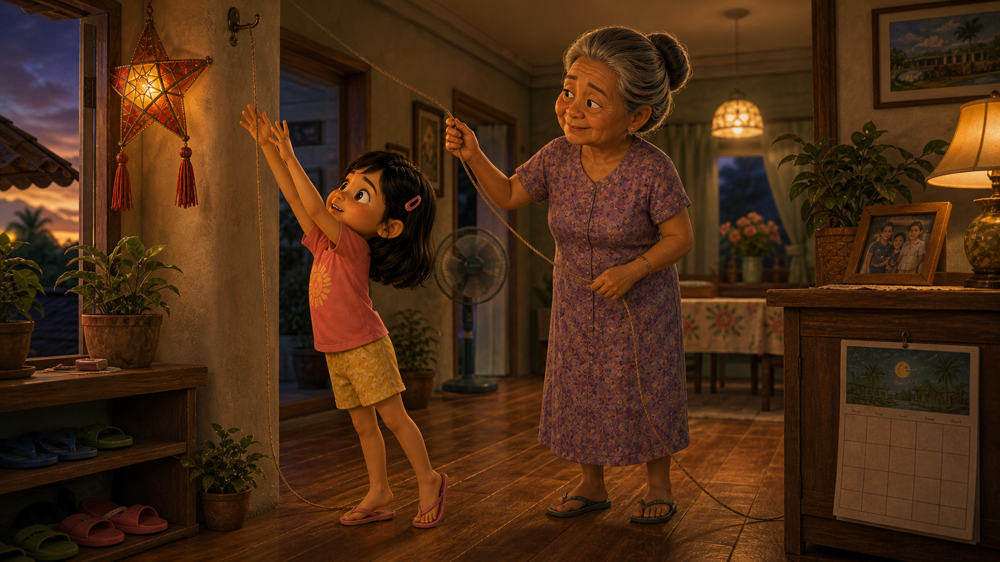
"I can tie the high hook," Maya said.
She stood on her toes until her tsinelas gave up.
Lola caught the string before it escaped.
"Next year, maybe."
"Next year is too far."
"The high hook needs patient hands."
Maya looked at her hands.
They looked available immediately.
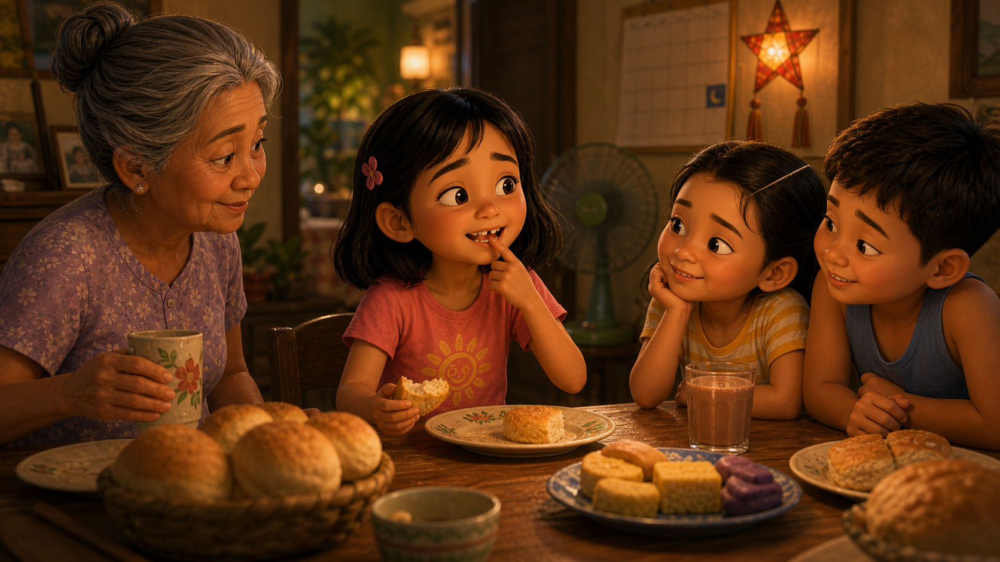
At merienda, Maya's loose tooth wobbled against warm bread and sweet crumbs.
It had been wobbling all week.
At breakfast, it leaned left.
At lunch, it leaned right.
By merienda, it seemed to be making an announcement.
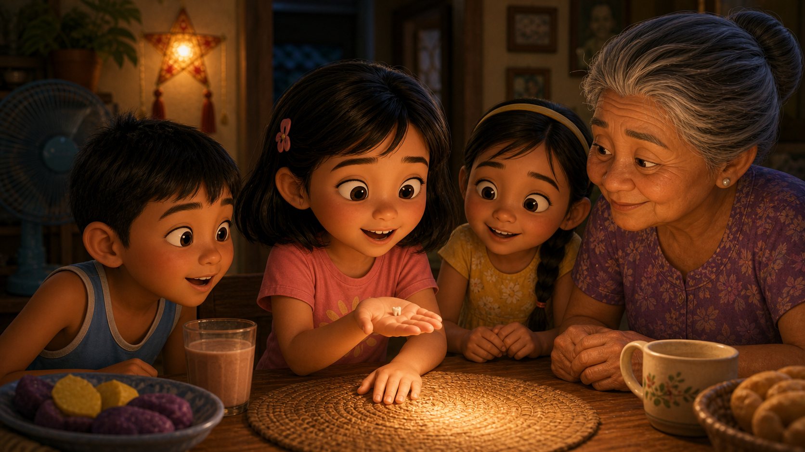
Maya bit down carefully.
There was a small click.
Then something tiny and white sat in her palm.
Maya stared at it.
Her cousins leaned in.
Lola leaned in too.
The tooth looked too small to have caused so much drama.
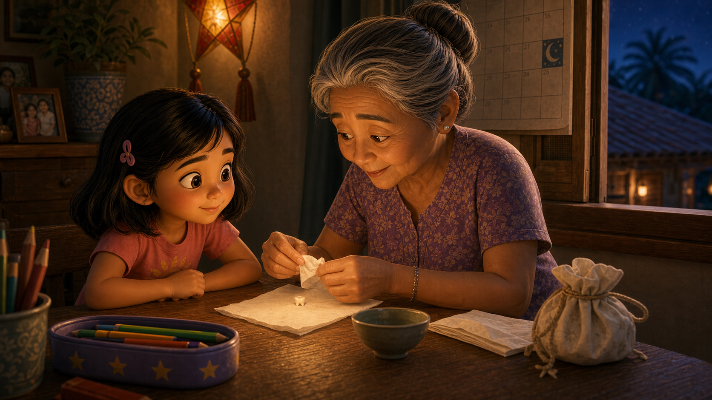
Lola rinsed the tooth and wrapped it in a square of tissue.
"When I was small," she said, "we did not give a tooth only to the night."
Maya held very still.
Lola's remembering voice was different from her where-did-I-put-the-scissors voice.
"We gave it time."
"We asked the roof mouse to hide it well," Lola said.
Maya glanced at the window.
"A mouse?"
"A very quick one."
"How quick?"
"Quick enough that children mostly see the place where the mouse was."
From the eave came one soft tick.
Probably the roof.
Maybe not.
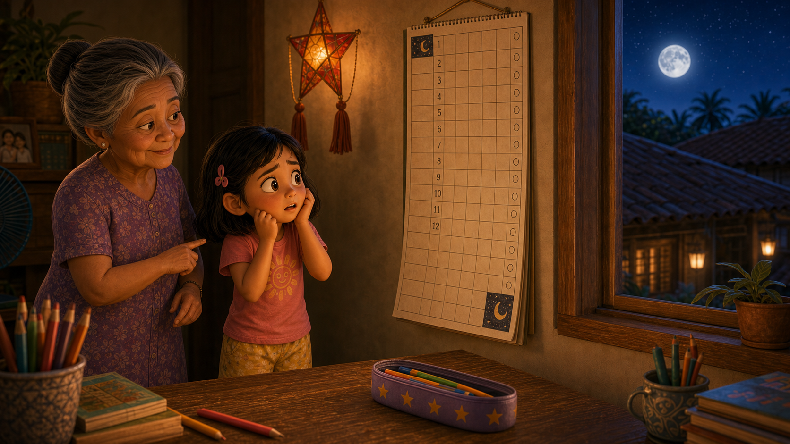
"If we found the tooth after one year," Lola said, "we could make another wish."
Maya stopped chewing.
"One real year?"
"One real year."
"That has twelve months."
"It does."
"And each month has too many mornings."
Lola nodded.
"That is why the wish has room to grow."
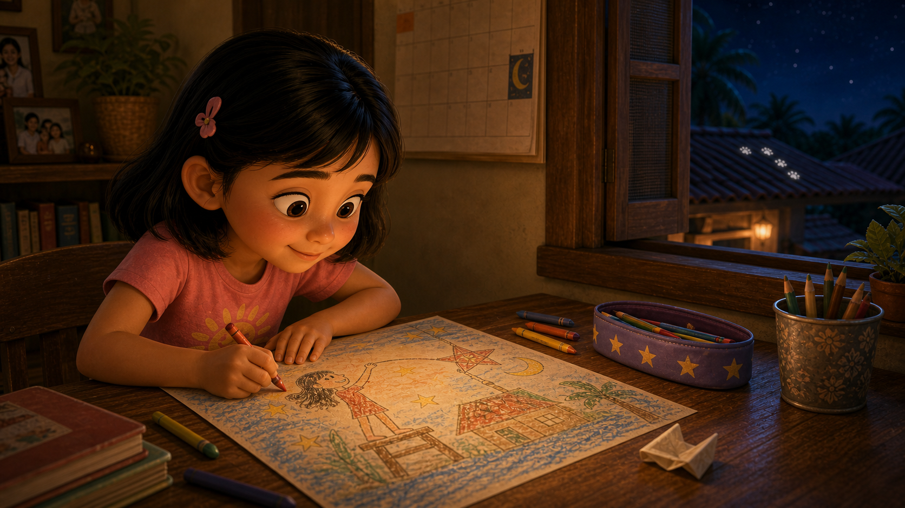
Maya sat at her desk and drew herself tying the high hook.
She drew the string.
She drew the parol.
She drew herself very tall.
Under the picture she wrote her wish in careful letters.
I wish to be big enough now.
Then she folded the paper as small as a secret.
Lola opened the window screen.
Maya stood safely inside and tossed the tiny bundle onto the low awning under the roof.
It landed with a soft tap.
The house seemed to blink.
"Now," Lola said, "we wait."
Maya nodded.
She was already thinking about how to wait faster.
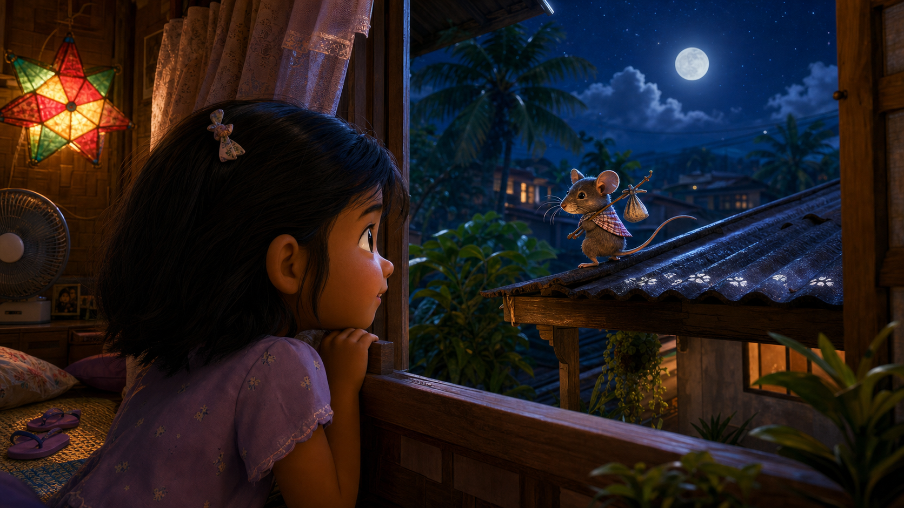
Something small crossed the awning.
Maya saw whiskers.
A folded ear.
A flash of silver feet.
A tail with the attitude of someone leaving before questions began.
Then the tooth was gone.
On the roof dust, three tiny pawprints glowed and went out.
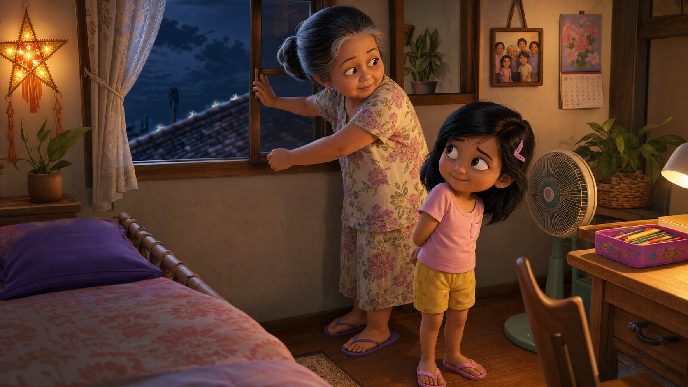
"That was Daga," Lola said.
"You saw Daga?"
"I saw the place where Daga was."
Maya leaned toward the window.
Lola closed it gently.
"No peeking."
Maya nodded in the serious way children nod when they have already begun planning the opposite.
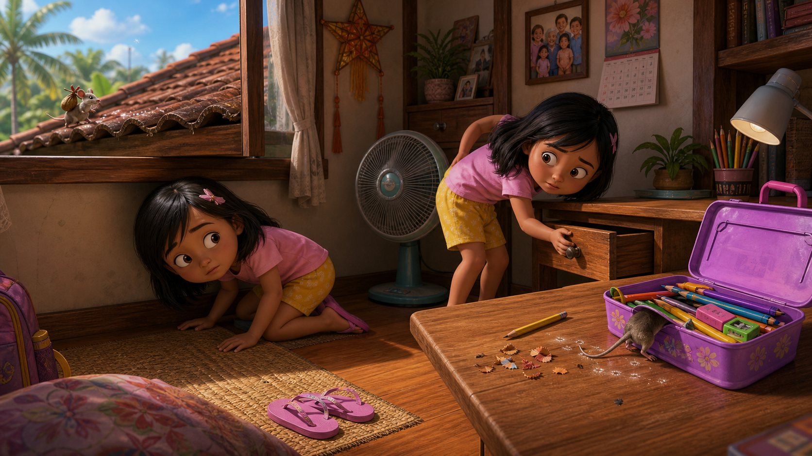
At sunrise, Maya checked the awning.
Then the windowsill.
Then the pencil box.
Everyone knew mysterious mice liked office supplies.
Inside the pencil box, one pencil rolled by itself.
Maya opened the lid.
Nothing was there except pencil shavings, eraser crumbs, and the strong feeling of being laughed at.
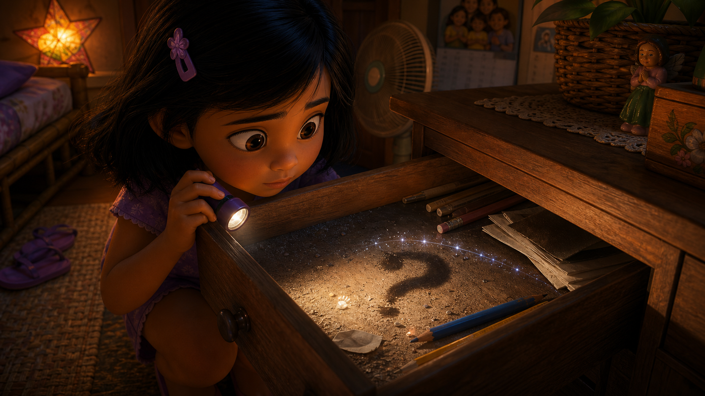
In the desk drawer, Maya found one silver pawprint.
She found a crumb of roof dust.
She found a shadow shaped like a question.
For one breath, the hiding place looked empty enough to feel forgotten.
Then another silver pawprint crossed the shadow.
The shadow pulled back.
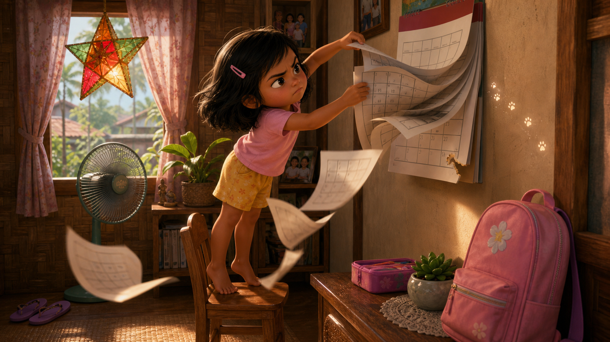
Maya looked at the family calendar.
One page.
Two pages.
Eleven pages.
"There," she whispered. "One year."
The calendar swung crooked on its nail.
The room did not believe her.
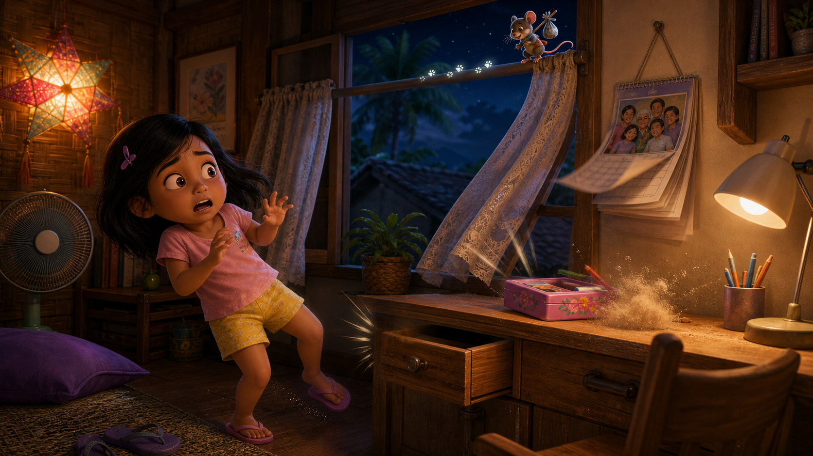
The drawer clicked shut.
The calendar flapped backward.
The pencil box sneezed out a crumb of roof dust.
Maya jumped.
The hidden place would not stay where impatience pointed.
Up near the eave, something tiny made a sound that was almost a cough.
Or possibly a laugh.
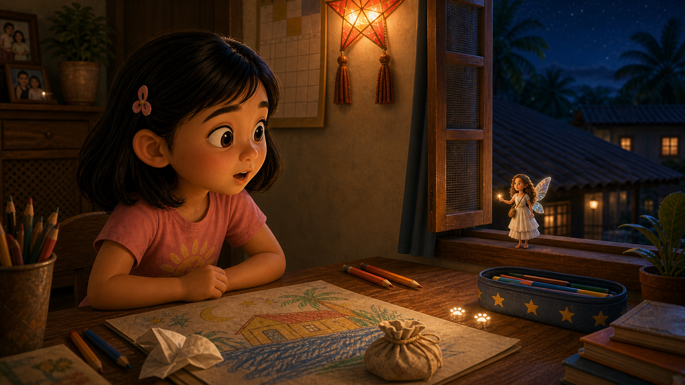
A warm gold glow brushed the window.
Tanda folded her wings small so she would not wake the whole house.
Her satchel rested at her side.
Her tooth pendant caught the light.
"Someone is pulling on a promise before its date," she whispered.
Maya looked at the calendar.
The calendar looked innocent.
Badly.
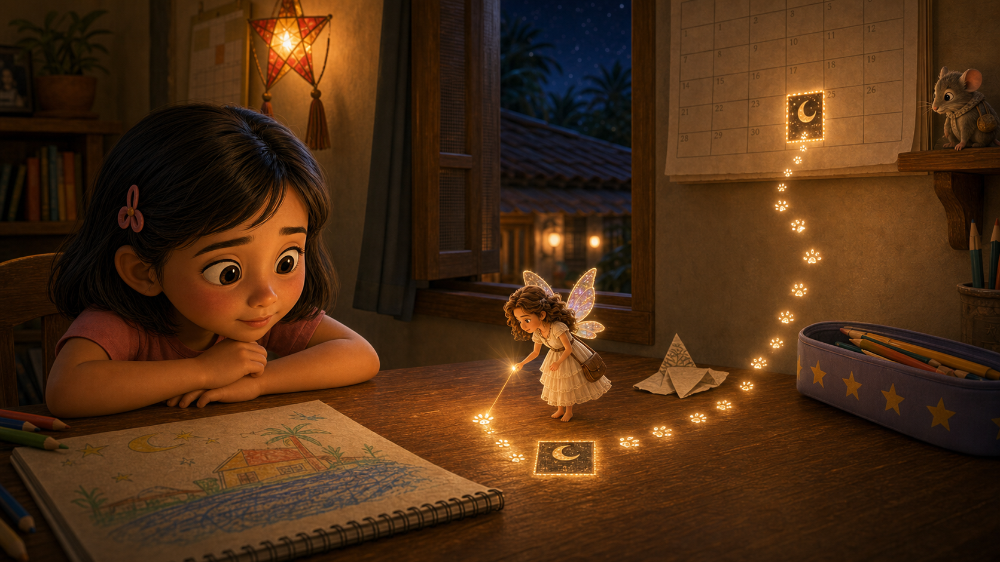
Tanda touched the silver pawprint.
Toothlight opened around it.
Gold met silver.
The map began to wake.
Then the light stopped at one tiny square of moon.
Tanda tried once more, very gently.
The square stayed closed.
"I can see the path," Tanda said. "I cannot shorten it."
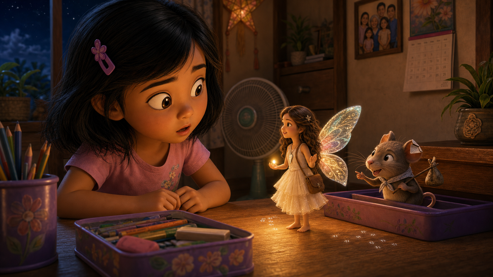
"Then who can?" Maya asked.
Behind Tanda, a tiny mouse stood on the pencil box.
Daga wore a scrap of calendar paper tied like a kerchief, soft as a secret and dusty at the edges.
One ear folded like a page corner.
Daga looked at Maya.
Daga looked at Tanda.
Daga looked at the calendar, as if everyone should have been paying better attention.
Then Daga vanished.
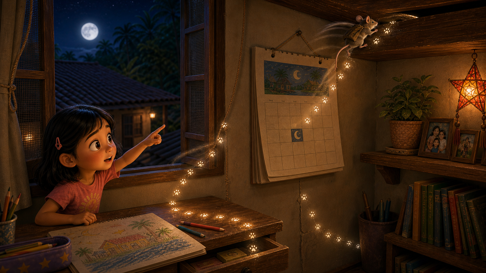
Daga ran up the curtain cord.
Across the wall seam.
Behind the calendar.
Through a space no mouse should have fit inside.
Only after Daga vanished did the silver tracks appear.
Maya tried to follow them with her finger.
The tracks were faster than fingers.
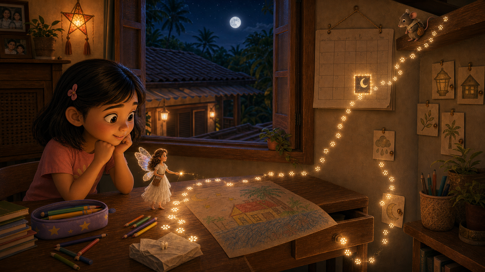
Tanda held her Toothlight low.
Daga's tracks answered in silver.
Together, they drew a map across the room.
Window.
Drawer.
Calendar.
Roofline.
Moon.
The house had been keeping the path all along.
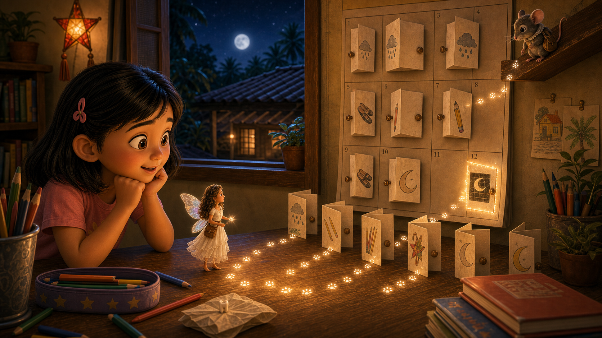
The months appeared as twelve small paper doors.
Eleven were pictures of waiting.
Rain.
School shoes.
New pencils.
A moon cut thin as a fingernail.
The twelfth door had a soft light behind it.
It would not open.
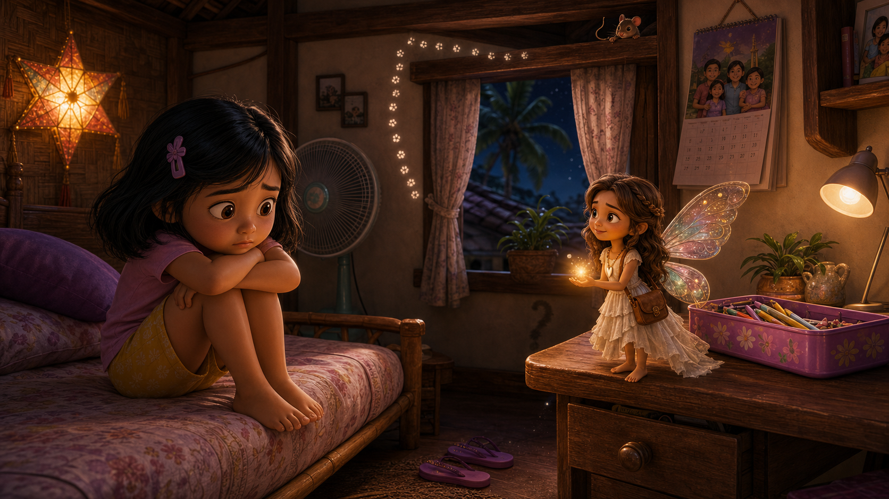
Maya's throat went tight.
"What if waiting means it forgets me?"
High near the ceiling, Daga's whiskers shone.
The little mouse's voice came from somewhere above the calendar.
"Waiting is not forgetting."
It was a very small voice.
It still filled the room.
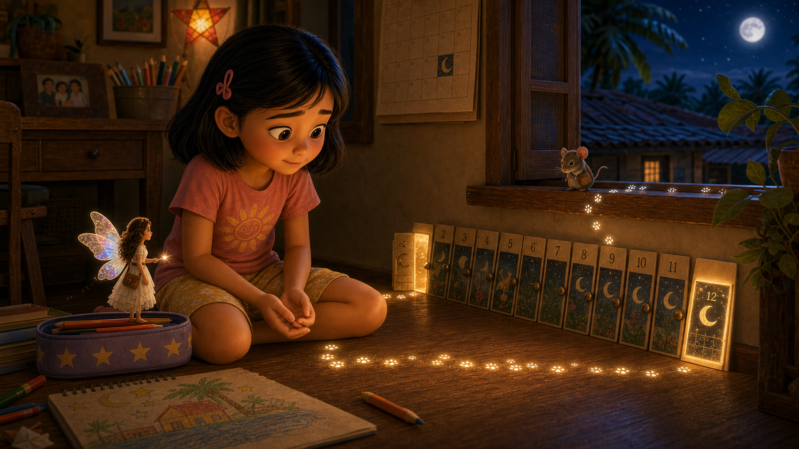
The first door glowed.
The twelfth door glowed.
Maya could grab at both and lose the map.
Or she could let one stay closed.
Her fingers curled.
Uncurled.
Then rested in her lap.
No one clapped.
That made it feel more important.
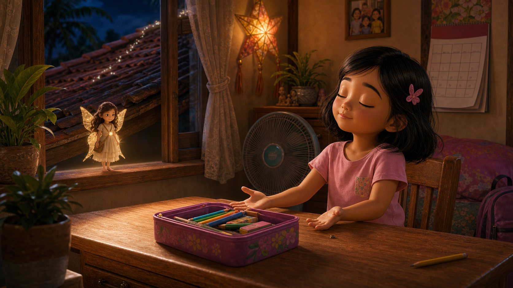
"All right," Maya said.
It came out smaller than she meant.
"Hide it where one year can find it."
The calendar straightened.
The drawer sighed.
The pencil box settled down.
The room became a room again.
Daga's tracks shone once near the eave, then disappeared.
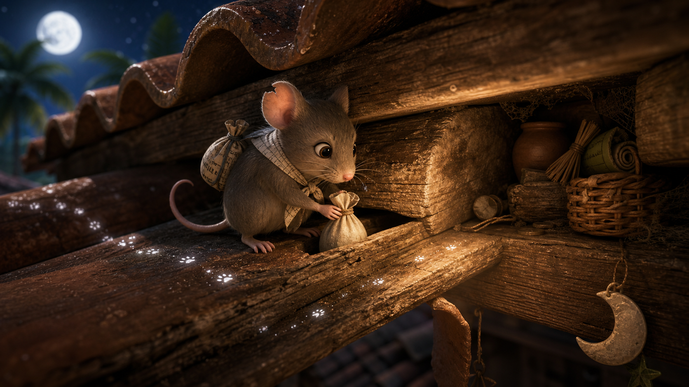
High above the window, under the eave, Daga worked.
Daga did not work with stamps or speeches.
Daga did not work by making the night brighter.
Daga worked with roof dust, moonlight, and the exact place a child would forget until she was ready to remember.
The tooth bundle slipped into a patient splinter of wood.
The splinter closed.
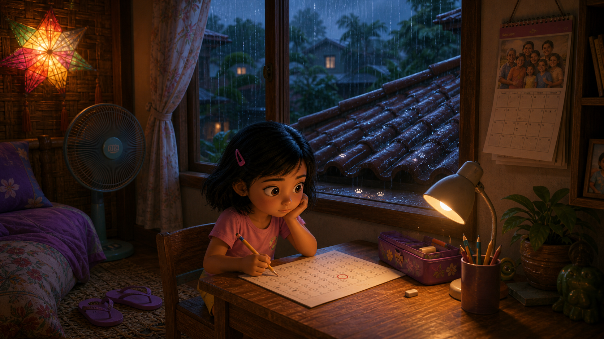
The first month passed with rain ticking on the roof.
Maya counted the ticks.
Then she counted the spaces between the ticks.
Then counting became boring.
This was a kind of mercy.
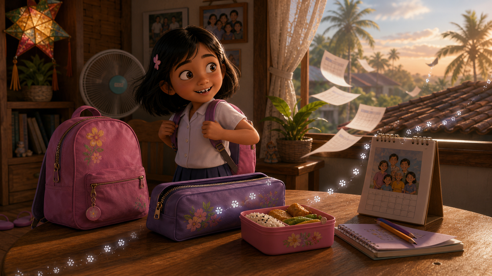
Then came school days.
Packed lunches.
Missing pencils.
New words.
Old slippers.
One grown-up tooth pushing in exactly when it felt like it.
Maya checked the calendar less often.
The calendar did not brag.
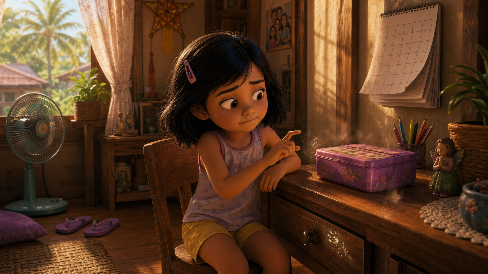
On a hot afternoon, the pencil box wiggled.
Maya put her hand on the lid.
Then she took her hand away.
"I know," she said.
The pencil box became very still.
Inside, something tiny was pretending not to be pleased.
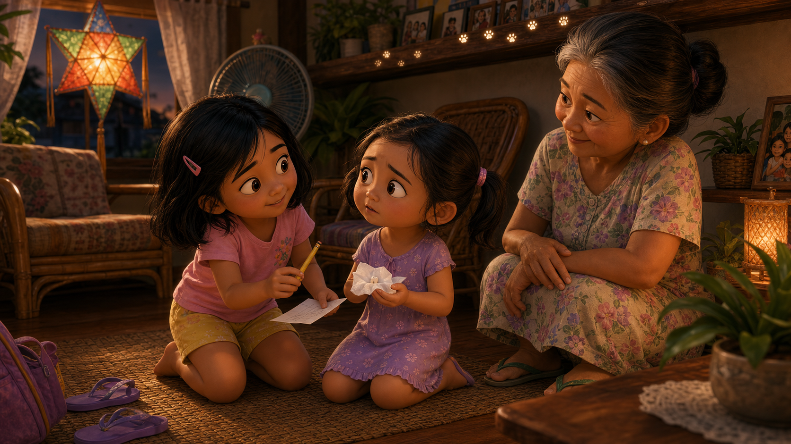
Maya's little cousin Nina came to visit.
Nina's tooth was loose.
Nina was not interested in this development.
"It's easy," Maya almost said.
Then she remembered the drawer shadow.
The calendar.
The twelfth door.
So she sat beside Nina and said, "It feels weird at first."
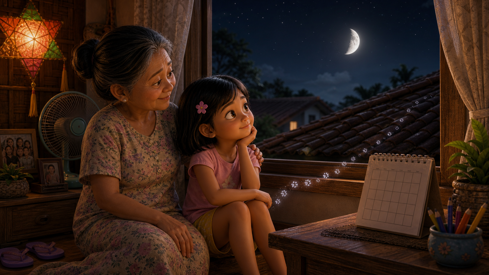
Half a year later, the moon looked like a fingernail clipping.
Maya laughed.
"I used to want the whole year to disappear."
Lola sat beside her at the window.
"And now?"
Maya thought about it.
"Now I only want it to hurry politely."
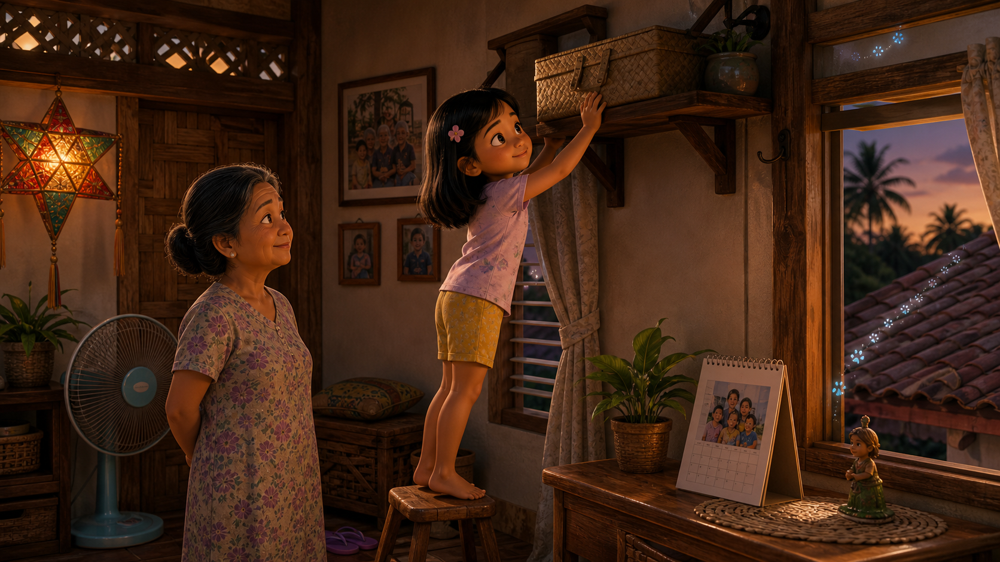
When the parol box came out of storage again, Maya was taller.
That helped.
But it was not the biggest thing.
The biggest thing was that she could hold the string without yanking it.
The high hook looked less like a prize.
It looked like a job someone had trusted her with.
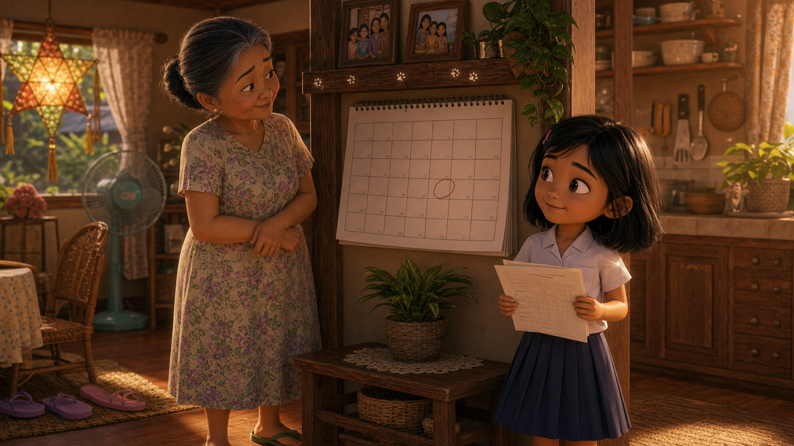
Lola looked at the calendar.
Then she looked at Maya.
She did not say a word.
This was difficult for Lola, who had many excellent words.
Maya saw the circled date by herself.
Her heart gave one hard knock.
One real year.
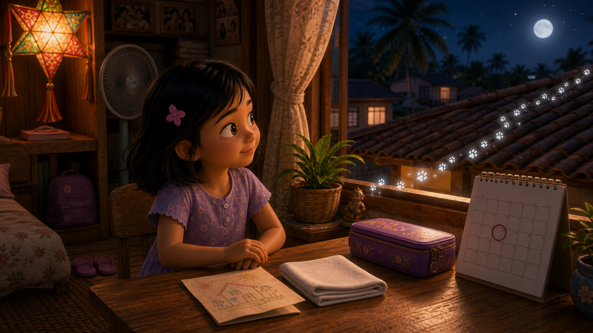
That night, Maya did not run to the window.
She washed her hands.
She found her old drawing.
She sat at her desk and waited until the house sounded ready.
The fan hummed.
The roof settled.
The calendar held still.
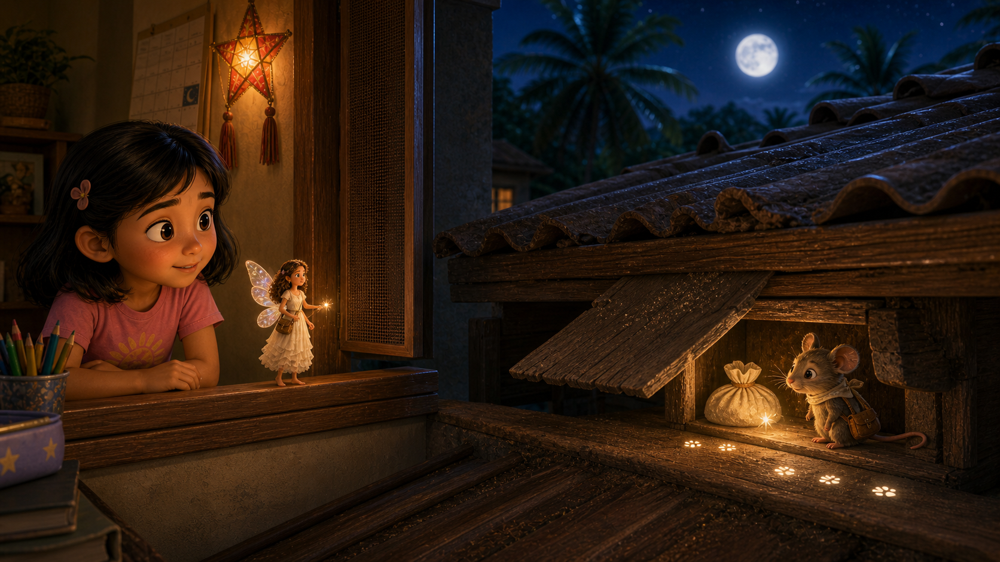
Under the eave, the patient splinter lifted like a tiny door.
The tooth bundle waited inside.
It was smaller than Maya remembered.
It was brighter than she expected.
Daga stood beside it.
For once, Daga did not run.
Tanda watched from the window with her light lowered.
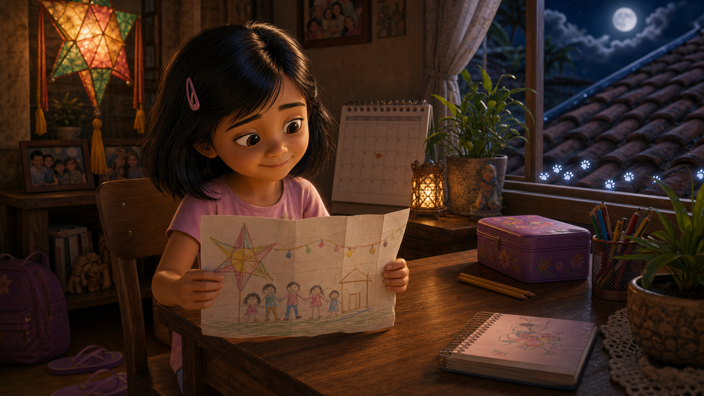
Maya unfolded the paper.
There was her drawing.
There was the high hook.
There was herself, very tall and very sure.
I wish to be big enough now.
Maya read the word now.
Then she smiled at it as if it belonged to a younger cousin.
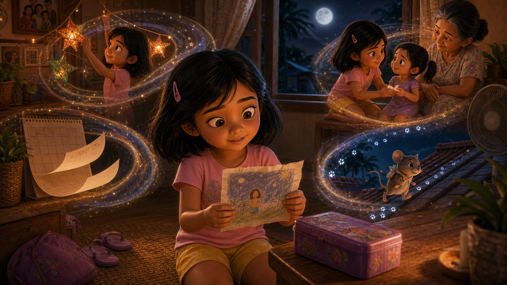
She was big enough to tie the parol string.
She was big enough to wait.
She was big enough to sit with Nina and not steal the brave part from her.
The wish had not arrived all at once.
It had come back in pieces.
Hands.
Days.
Choices.
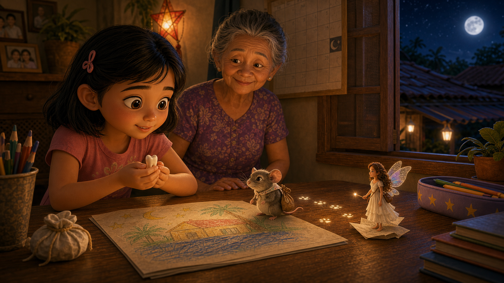
Maya held the tooth in both hands.
"For my next wish," she said, "let Nina's wish have a hiding place that remembers her."
Lola's smile went soft.
Tanda looked at Daga.
Daga looked away first, which is how very serious mice sometimes admit they are moved.
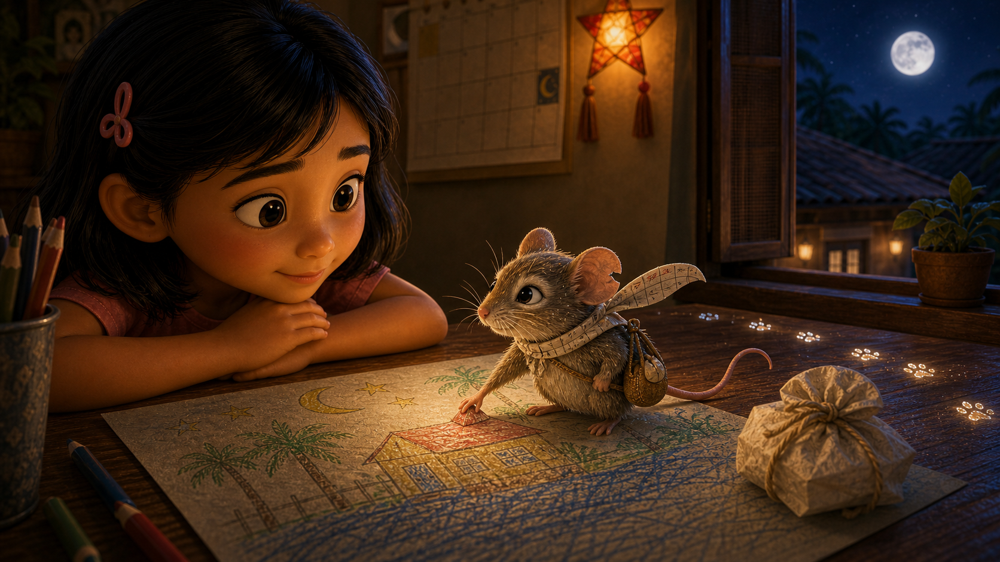
Daga stepped onto Maya's drawing.
One tiny paw touched the roofline Maya had drawn a year before.
The calendar-paper kerchief lifted in the night air.
Daga's whiskers shone.
For the first time, Maya could see the whole mouse and not only the place where Daga had been.
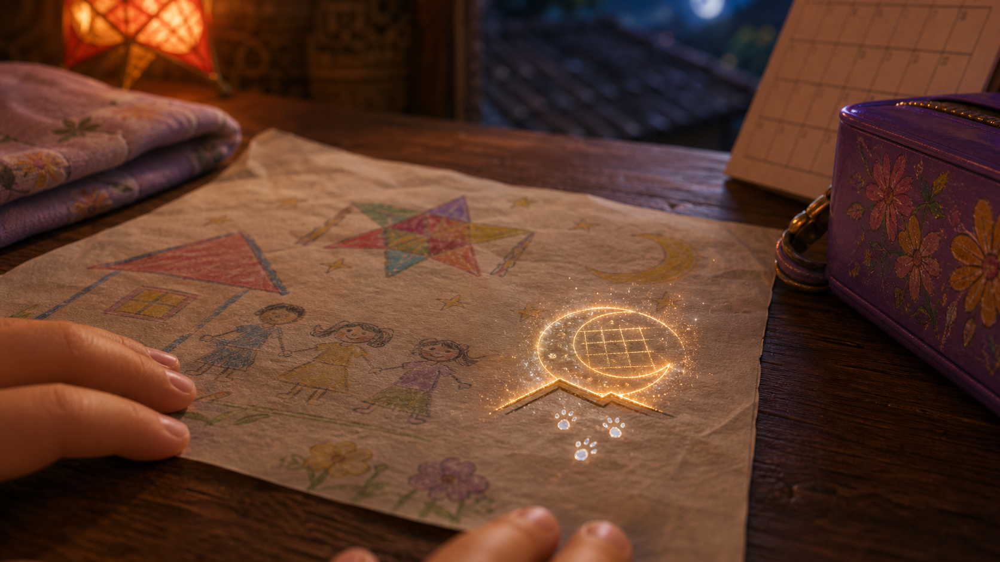
A small moon curled into the corner of the drawing.
A calendar square glowed.
Three mouse tracks crossed the roofline.
The marks did not cover Maya's picture.
They settled into it.
As if the drawing had always been saving a place.
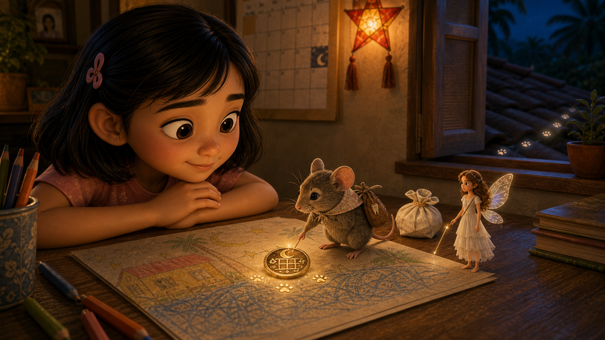
Tanda raised one hand.
Then she lowered it again.
The charm was already complete.
Some magic did not need more light.
"Some memories," Tanda said softly, "are kept by not opening them too soon."
Daga gave her a look that said, Finally.
Tanda bowed her head.
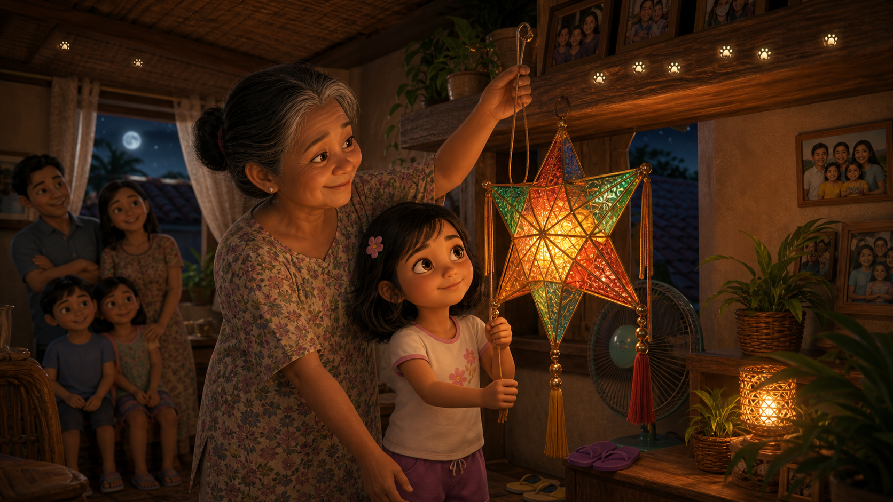
Lola tied the last knot on the parol.
Then she handed Maya the high hook.
Maya took it with careful hands.
Lola did not say, "I told you."
This was one of Lola's finest magic tricks.
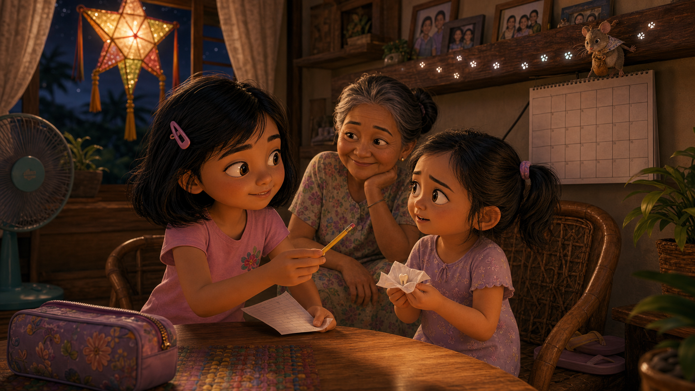
When Nina's tooth finally fell, Maya brought a square of tissue, a pencil, and her most serious face.
Nina held the tooth like it might jump.
"First," Maya said, "the wish needs room."
Near the pencil box, one tiny silver pawprint appeared.
Then another.
Then none at all.
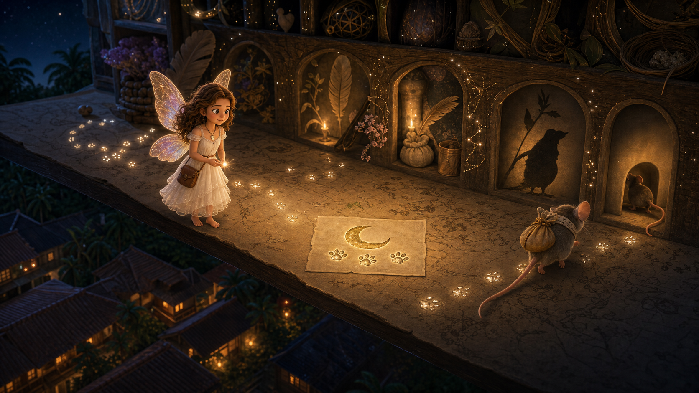
Far above the roof, Tanda's shelf-map opened.
There were mouse roads.
Feather songs.
Threshold shadows.
Toothlight promises.
Now a tiny moon-calendar mark appeared between them, with three small mouse tracks walking around its edge.
No road told Daga where to go.
No light opened Daga's hidden place.
The Network simply made room.
Below, Maya helped Nina fold her wish.
Above, Daga vanished before anyone could say thank you.
Which was how everyone knew Daga had been listening.